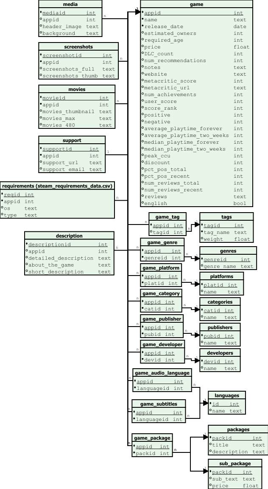

„D” Egységes relációs séma normalizálás
Bevezetés
A „D” séma a korábbi három (A, B, C) sémák összevonásával és egységesítésével jött létre. Kiindulási alapként több, különböző forrásból származó CSV-fájl szolgált, amelyek részben eltérő szerkezetűek voltak, illetve eltérő mezőket tartalmaztak.
A 2024-es és 2025-ös adatfájlok közötti fő különbség, hogy a 2025-ös verzió tartalmazta a
discount mezőt, míg a 2024-es verzió nem.
A különböző forrásokból érkező táblák összehangolásával egy egységes, teljes és normalizált adatmodell jött létre.
Normalizálás lépései
Első normálforma (1NF)
Az eredeti CSV-fájlok több attribútuma nem atomi értékeket tartalmazott (pl.
tags,genres,categories,supported_languages,full_audio_languages,packages,requirementsJSON formában).Az 1NF megköveteli, hogy minden attribútum csak atomi értéket vehessen fel.
Az ilyen mezők önálló táblákba kerültek, a kapcsolatok pedig asszociatív táblákban vannak tárolva.
Példák: *
game_subtitles+languages(felirat nyelvek) *game_audio_language+languages(hang nyelvek) *requirements– rendszerkövetelmények OS és típus (minimum/ajánlott) szerinti bontásban *game_tag+tags(címkék súlyozással) *game_genre+genres*game_category+categories*game_platform+platforms*game_package+packages+sub_package(többszintű csomagszerkezet)
Második normálforma (2NF)
A
gametábla elsődleges kulcsa azappid.A nem a játék alapadatait leíró, de az
appid-tól függő adatok külön táblákba kerültek:description– részletes, rövid és általános leírásoksupport– támogatási információk (URL, email)media– fejléckép és háttérscreenshots– játékhoz tartozó képernyőképekmovies– videókrequirements– operációs rendszer és követelménytípus szerinti bontásowners– tulajdonosi tartomány szöveges formábanlanguages– nyelvek (önálló entitás, amelyet a két asszociatív tábla kapcsol a játékokhoz)packages– csomagok alapadatai (packid,title,description)sub_package– csomag al-elemei (packid,sub_text,price)
Harmadik normálforma (3NF)
A tranzitív függőségek megszüntetésére az ismétlődő szöveges mezők önálló entitásokba kerültek.
A sok-sok kapcsolatokat asszociatív táblák kezelik:
game_subtitles (appid, languageid)game_audio_language (appid, languageid)game_tag (appid, tagid, weight)game_genre (appid, genreid)game_category (appid, catid)game_platform (appid, platid)game_developer (appid, devid)game_publisher (appid, pubid)game_package (appid, packid)
A csomagstruktúra három szinten valósul meg: *
game_package– a játék és csomag kapcsolata (appid,packid) *packages– csomag alapadatai (packid,title,description) *sub_package– a csomag részletei és ára (packid,sub_text,price)Ez biztosítja az adatok konzisztenciáját, minimalizálja a redundanciát és lehetővé teszi az egyszerű bővíthetőséget.
Végső séma – „D” reláció
A normalizálás eredményeként a „D” séma a következő fő relációkból áll:
game– játék alapadatai (név, megjelenési dátum, ár, értékelések, játszási idők, metacritic, tulajdonosok, statisztikák, és a 2025-ös verziókban adiscountmező)media– médiatartalmakscreenshots– képernyőképekmovies– játékhoz tartozó videóksupport– támogatási információkrequirements– rendszerkövetelményekdescription– leírásoktags– címkék (súlyozással)genres– műfajokplatforms– platformokcategories– kategóriákpublishers– kiadókdevelopers– fejlesztőklanguages– nyelvek (önálló lista, minden nyelv egyedi sorban)packages– csomagok alapadataisub_package– csomag al-elemei (leírás és ár)
Kapcsolótáblák:
game_tag– játék–címke kapcsolatgame_genre– játék–műfaj kapcsolatgame_platform– játék–platform kapcsolatgame_category– játék–kategória kapcsolatgame_publisher– játék–kiadó kapcsolatgame_developer– játék–fejlesztő kapcsolatgame_audio_language– játék–hangnyelv kapcsolatgame_subtitles– játék–felirat kapcsolatgame_package– játék–csomag kapcsolat
Összefoglalás
A D relációs séma az előző A, B és C sémák összevonásából született meg. Fő előnyei:
Egységesítette a különböző CSV-forrásokból származó adatokat
Biztosítja az 1NF, 2NF és 3NF követelményeit
Megszüntette a redundáns és nem atomi mezőket
Külön kezeli a feliratokat (
game_subtitles) és a hangnyelveket (game_audio_language)A csomagokat háromszintű struktúrában kezeli (
game_package→packages→sub_package)Kezeli a sok-sok kapcsolatokat asszociatív táblákon keresztül
Tartalmaz minden fontos információt a játékokról, bővíthető módon
Megkülönbözteti a források közti eltéréseket (pl.
discountcsak a 2025-ös adatokban szerepelt)Az adatok konzisztens, redundanciamentes és bővíthető adatmodellbe szerveződnek
Relációs séma diagram
{kind=link}
Dictionary
Az „D” adathalmaz dictionary-je az alábbi linken érhető el: